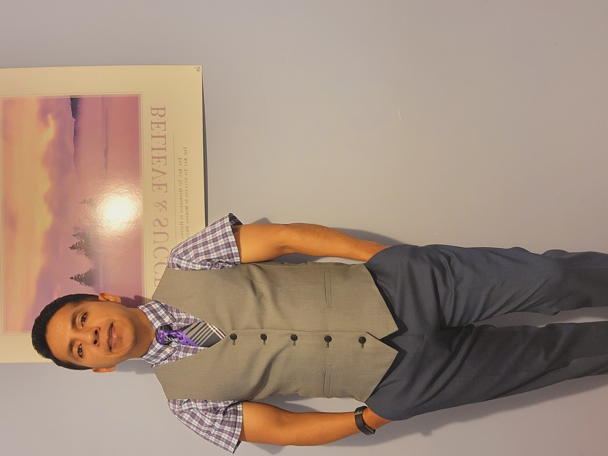
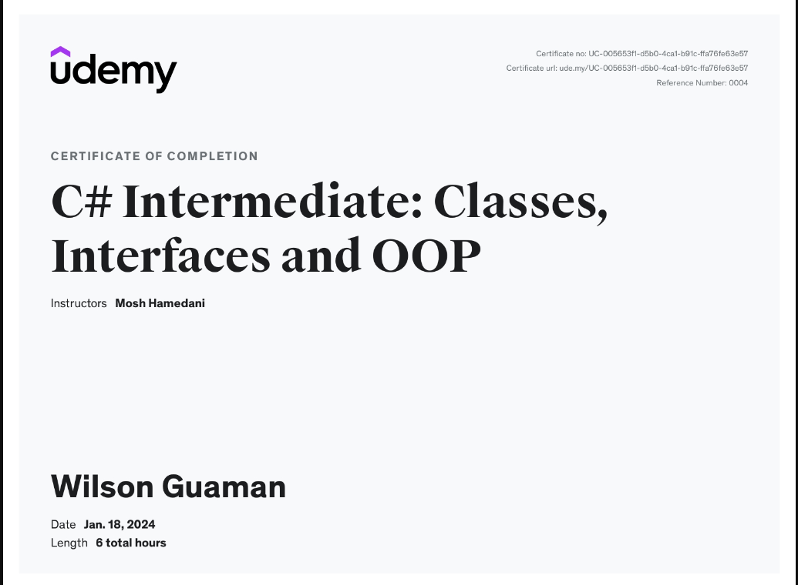
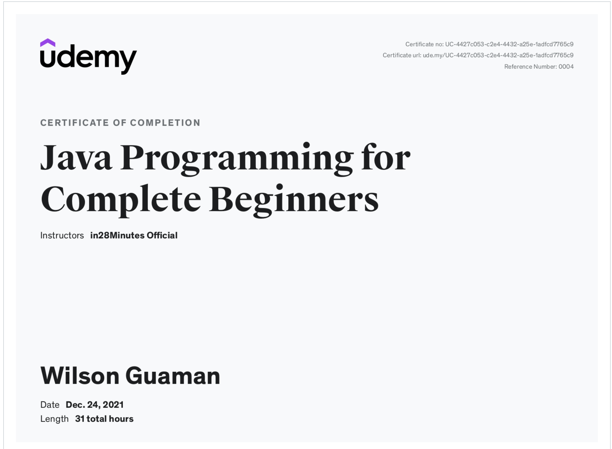
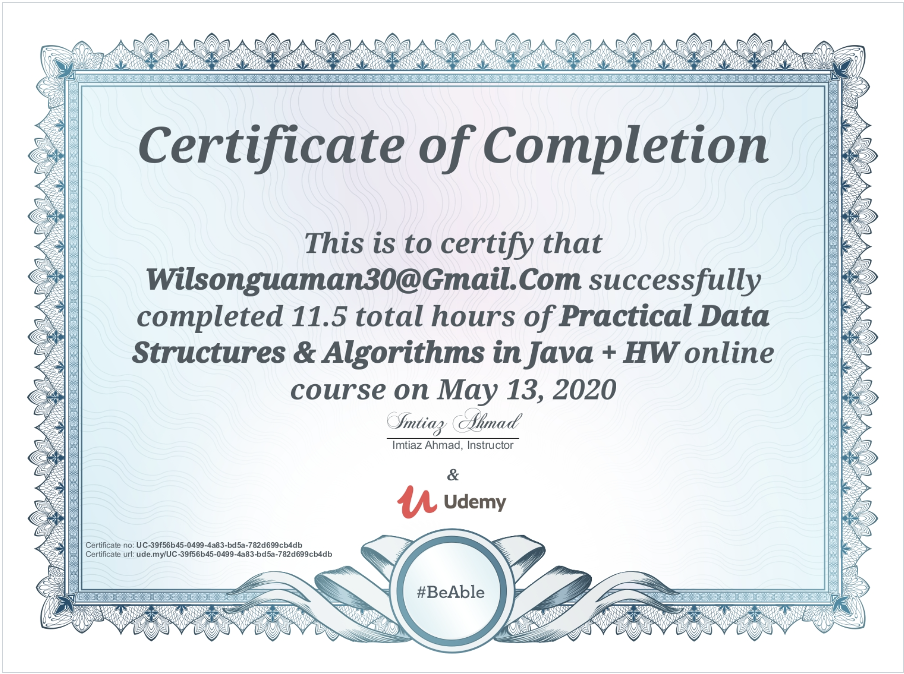
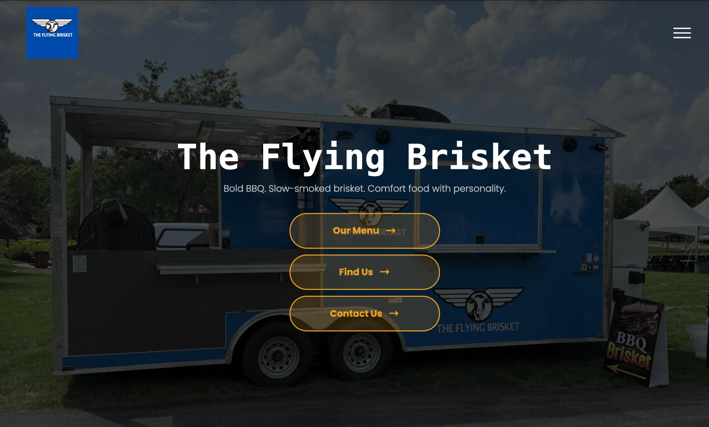
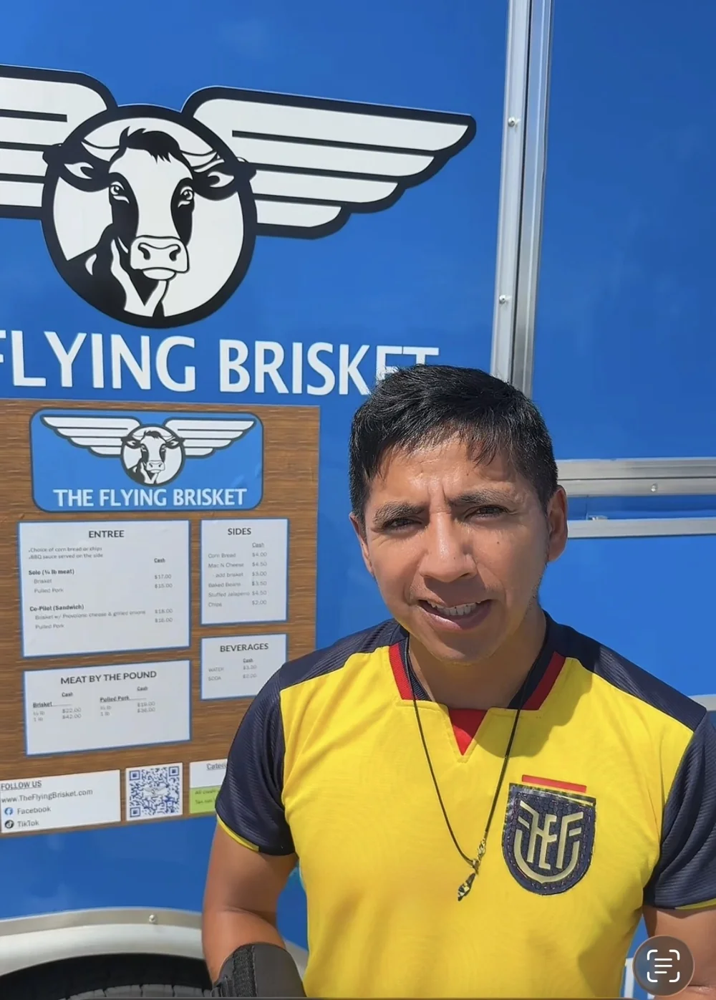

Atención al cliente
Banca, asistencia al cliente y resolución de problemas.
PORTAFOLIO PROFESIONAL / BILINGÜE EN INGLÉS Y ESPAÑOL
Profesional plenamente bilingüe en inglés y español con experiencia en atención al cliente, banca, software empresarial y soporte informático. Combino la comunicación clara y la resolución de problemas técnicos para ofrecer soluciones prácticas.
Disponible para oportunidades profesionales

Banca, asistencia al cliente y resolución de problemas.
Resolución de problemas, software y fundamentos de redes.
Dominio pleno del inglés y el español.
Licenciatura y experiencia en software empresarial.
01 / SOBRE MÍ
Mi trayectoria abarca el desarrollo de software empresarial, la atención al cliente en banca, el soporte técnico y la tecnología para pequeñas empresas. Disfruto investigar problemas, comunicarme con claridad y encontrar soluciones prácticas.
Tengo una licenciatura en Ciencias de la Computación y domino plenamente el inglés y el español. Continúo ampliando mis habilidades técnicas mediante estudios de redes y proyectos prácticos.

Mantenimiento de aplicaciones ERP, depuración, SQL y desarrollo web.
Atención bilingüe al cliente, servicios bancarios, registros precisos y resolución de problemas.
Resolución de problemas de equipos y redes, alojamiento en la nube y formación continua en redes.
The Flying Brisket inició operaciones en junio de 2026. Desarrollé contenido promocional bilingüe y construí una audiencia en TikTok y Facebook durante la temporada de operaciones del negocio, sin publicidad pagada.
05 / EDUCACIÓN
2017–2021
Licenciatura en Ciencias de la Computación (B.S.)
Promedio 3.74 · Cum Laude · Lista de honor del decano
2011–2016
Grado asociado en Estudios Generales (A.A.)
Promedio 4.0 · Lista de honor del decano
2003–2005
Diploma técnico · Reparación automotriz
Promedio 3.0
06 / APRENDIZAJE CONTINUO
Certificados de finalización de cursos, no certificaciones profesionales de la industria.



Actualmente estudio fundamentos de redes con Jeremy's IT Lab para fortalecer mis conocimientos de infraestructura de redes, conectividad y resolución de problemas.
02 / TRAYECTORIA
Soporte tecnológico y empresarial · Independiente, según necesidad
Brindo atención al cliente y apoyo tecnológico, operativo y de marketing digital según las necesidades del negocio.
Representante de atención al cliente
Ingeniero de software
Asistente de TI · Prácticas profesionales
Atención al cliente · Mesero · Anfitrión · Cajero
03 / PROYECTOS DESTACADOS


Diseñé y publiqué un sitio web adaptable para un negocio de comida móvil, con menús, ubicaciones de eventos y consultas de clientes. Combiné desarrollo web, alojamiento en la nube y promoción comercial.
Prototipo de software asistido por IA que explora la gestión de pedidos, permisos de empleados, pantallas de cocina y procesos de pago. Las funciones previstas no se presentan como terminadas.

Proyecto de aprendizaje de comercio electrónico con Java y Spring Boot.
Aplicación local en ASP.NET para información de eventos, formularios de confirmación, validación y resúmenes de asistencia.
Sitio web estático adaptable con navegación accesible, visualización ligera de datos y recursos multimedia optimizados.
04 / CASO DE ESTUDIO EMPRESARIAL
PRIMERA TEMPORADA · INICIO EN JUNIO DE 2026 · 100% ORGÁNICO
The Flying Brisket — contenido promocional bilingüe y desarrollo de audiencia en TikTok y Facebook, sin publicidad pagada.
26 nov. 2025 – 25 nov. 2026
Escala de barras: 0–30,000 visualizaciones. Las cifras de cada video corresponden a capturas del perfil.
Últimos 90 días · Captura de nov. 2026
7% seguidores
Los reels representaron casi todas las visualizaciones de Facebook.
Fuentes: capturas de TikTok Studio y del panel empresarial de Facebook. Los períodos de medición son distintos; las cifras combinadas no representan personas únicas. El gasto publicitario fue declarado por el propietario. No se atribuyen ventas a estas cifras.
Selecciona una captura para ampliarla.
07 / CONTACTO
Estoy abierto a oportunidades en tecnología, atención al cliente, soporte informático, operaciones empresariales y marketing digital.
Dispongo de un currículum adaptado a cada oportunidad, previa solicitud. Por favor, indique el puesto o área profesional para la que está contratando.
Los enlaces de correo abren su aplicación de correo electrónico. También puede copiar la dirección anterior o contactarme por LinkedIn.